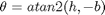
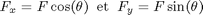
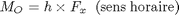
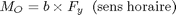

Problème 2/32, Meriam p. 43

Mo – démarche scalaire et théorème de Varignon
Déterminer les composantes rectangulaires de F dans les directions de h et de b. Appliquer le théorème de Varignon. Revoir la figure 2/9.

Exemple



Au point P

Au point Q
